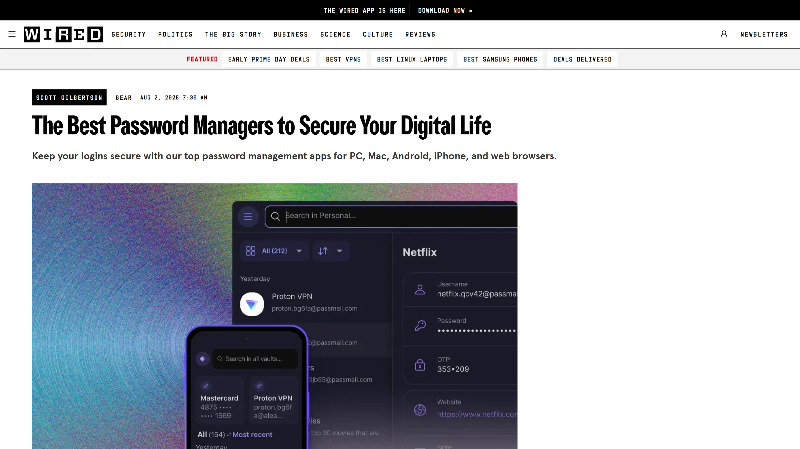
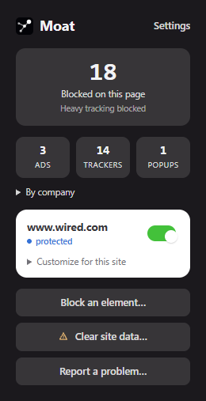
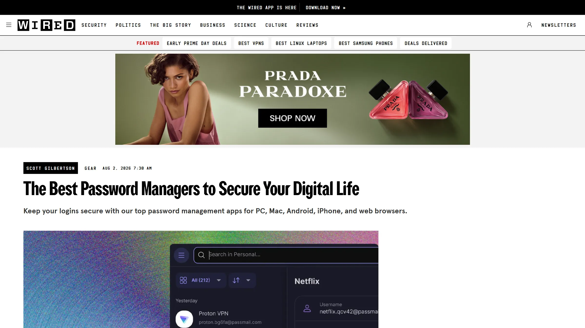

Just the page you came for.
About 350,000 filter rules stop ads and trackers before they load, on every site.
On this page, ads took up 42% of the first screen.
Moat blocks ads, trackers and hijacked popups. No server, no account, no telemetry.
Want it now? Install from source. It works in Chrome and Firefox today.


With Moat
Without MoatDrag the handle to see the same page with and without Moat.
It works the moment you install it. There's nothing to set up.
About 350,000 filter rules stop ads and trackers before they load, on every site.
On this page, ads took up 42% of the first screen.
Blocked ads don't leave empty boxes behind, so the page closes up around what you're reading.
Switch it on once and Moat answers them for you, sharing as little as the site allows.
Fake prize and fake virus tabs get shut the moment they open. You never see them.
Trust a site? One switch pauses Moat there. Anything a filter list misses, you can block with a click.
There's nothing to collect, so there's nothing to leak or sell. You can check every line.
There's no Moat backend. Blocking happens inside your browser.
Install it and it works. No sign-up, no email, no login.
No analytics and no crash reports. The developer receives nothing about you.
Daily filter fixes are checked against a signing key built into the extension.
GPL-3.0 on GitHub. Anyone can read it, build it and compare.
Written for the current extension platform from day one. It's not a cut-down port of an older blocker.
Moat is on its way to the Chrome Web Store. You can install it from source now.
Yes. Moat is free and open source under GPL-3.0. There's no paid tier, no premium unlock and no subscription.
Ads, trackers and hijacked pop-up tabs, out of the box. Cookie banners, fingerprinting protection and leaked-password warnings are switches in Settings.
No. There's no Moat server, no account and no analytics. The only thing it downloads is a small, signed file of filter fixes once a day, and that request carries nothing about you.
It doesn't. Moat is an open-source project with no server to pay for. Nothing you do is sold, and it doesn't show "acceptable" ads.
Filter lists run inside the browser's own blocking engine, so ads and trackers are stopped before they load. A small signed update arrives once a day. Read the technical details.
An ad blocker has to see a page's requests to block them, on every site you visit. Moat reads pages on your computer only and never sends their content anywhere.
Yes. Open the Moat popup on that site and flip the switch. Everywhere else stays protected.
Yes. Moat is built from one codebase for both Chrome and Firefox, including Firefox for Android.
It's being prepared for submission now. Until then you can install it from source in a couple of minutes.